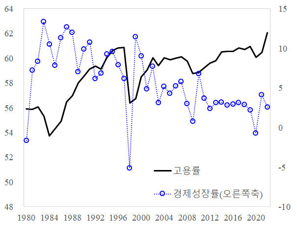
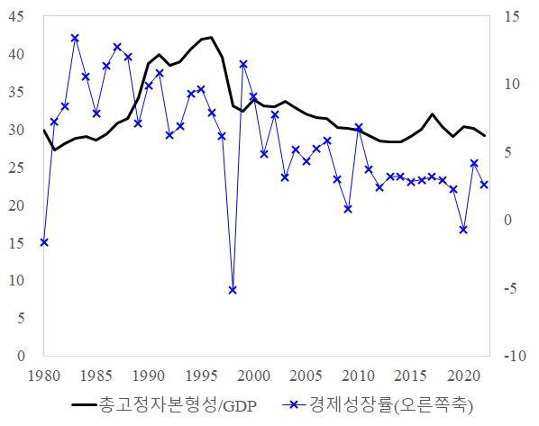
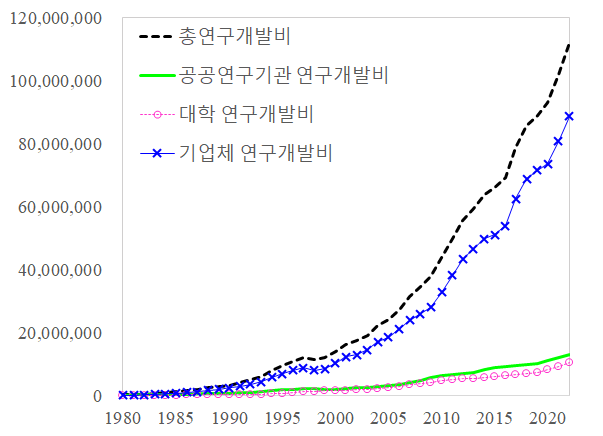
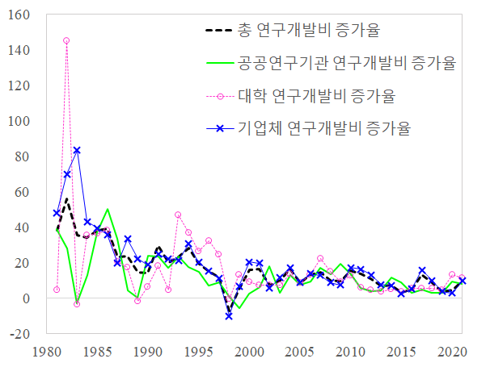
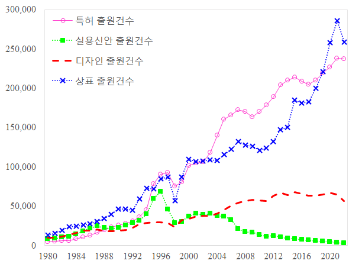
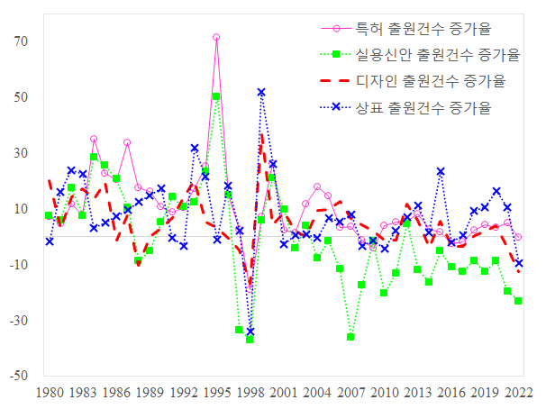
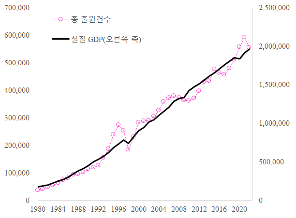
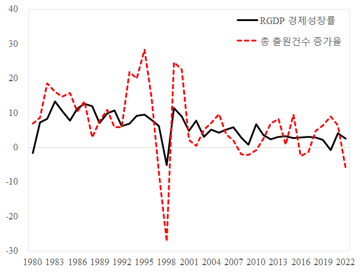

지식재산권과 경제성장의 관계1
1. 지식재산권 연구의 중요성
최근 한국 경제는 저출산·고령화의 급속한 진행, 생산가능인구의 감소, 잠재성장률 둔화 등 구조적 전환기에 직면해 있다. OECD에 따르면, 한국의 1인당 잠재성장률은 2020~2030년 기간 1.9%, 2030~2060년에는 0.8%로 추정되며, 이는 38개 회원국 중 가장 낮은 수준이다. 이러한 저성장 기조 속에서, 경제 시스템은 전통적인 자본·노동 중심의 산업구조에서 벗어나 지식기반경제(knowledge-based economy)로 전환되고 있으며, 이에 따라 지식의 축적과 혁신 역량 강화가 경제성장의 핵심 전략으로 부상하고 있다.
이 같은 경제환경 변화 속에서 지식재산권(Intellectual Property Rights, IPRs)에 대한 인식도 크게 전환되고 있다. 과거 지식재산권은 창의적 활동을 보호하기 위한 법적 장치로 간주되었지만, 현재는 R&D를 자극하고 고부가가치 산업을 창출하며, 산업경쟁력을 제고하는 경제 성장의 전략적 수단으로 간주되고 있다.
지식재산권 제도는 아이디어와 기술에 대한 독점적·배타적 권리를 부여함으로써, 이를 생산요소 및 고부가가치 상품으로 전환할 수 있는 기반을 제공한다. R&D 활동의 결과물인 지식재산권은 기업의 성과에 긍정적 영향을 미칠 뿐만 아니라(조휘형, 2014), 산업 성장(김진우, 2019; 특허청·한국지식재산연구원, 2020)과 국가 경제 전반에도 유의미한 기여를 하는 것으로 분석되고 있다(연태훈 외, 2003). 이러한 인식의 확산과 함께, 한국에서는 2009년 심사관의 보정권 신설, 2010년 '정부 등에 의한 특허발명의 실시' 조항 도입 등 다양한 지식재산권 제도 개편이 이루어져 왔으며, 이는 기업의 출원 행태 및 산업구조에 실질적인 영향을 미치고 있다.
특히 최근에는 국제특허출원(PCT)을 중심으로 한국의 지식재산 창출 역량이 크게 제고되었다. 한국은 2020년부터 2022년까지 3년 연속 세계 4위의 국제특허 출원국으로 기록되었으며, 2022년에는 PCT 출원 증가율이 전년 대비 6.2%로 주요국 중 가장 높은 수치를 보였다. 이처럼 지식재산권의 축적이 기술혁신과 경제성장에 기여할 수 있다는 경험적 근거가 축적됨에 따라, 지식재산권과 경제 간의 인과적 관계에 대한 관심이 더욱 고조되고 있다.
이에 본 연구는 지식재산권의 거시경제적 파급효과를 분석 대상으로 설정하고, 한국의 실증 데이터를 바탕으로 다양한 지식재산권 유형이 경제성장(GDP)에 미치는 영향을 계량적으로 규명하고자 한다.
2. 지식재산권 기반 경제성장 연구
1) 내생적 성장이론(endogenous growth theory)
전통적인 경제성장 이론의 대표격인 Solow(1957)의 성장회계 모형은 장기적인 경제성장을 노동과 자본의 양적 증가 및 생산성 향상에 의해 설명하며, 이 중 총요소생산성(TFP)의 증가는 외생적으로 주어진 것으로 간주하였다. Solow는 측정 가능한 자본 및 노동의 성장으로 설명되지 않는 산출량 증가분을 ‘잔차(residual)’으로 처리하였으며, 이는 기술 진보와 같은 비관측 요인에 기인한다고 보았다. 그러나 이와 같은 외생적 접근은 생산성의 결정 요인을 설명하지 못하는 한계가 있다.
이러한 한계를 극복하고자 등장한 것이 내생적 성장이론(endogenous growth theory)이다. Romer(1986, 1990, 1994)와 Lucas(1988)에 의해 발전된 내생적 성장이론은 기술 진보와 생산성 향상이 경제시스템 내에서 내생적으로 발생할 수 있으며, 이는 교육, 연구개발(R&D), 지식의 축적과 같은 요인들에 의해 설명될 수 있다고 주장한다. 내생적 성장이론의 확장된 생산함수에 따르면, 국민저축률의 증가와 지식 축적은 생산량 증가율에 지속적으로 영향을 미치며, 이러한 구조는 정부의 정책 방향에도 시사점을 제공한다. 즉, 단순한 자본 투자나 노동 공급 확대만으로는 한계가 존재하며, 장기적 경제성장을 달성하기 위해서는 저축률 제고 정책(예를 들어, 가계 및 정부 저축 확대, 금융 시장 효율화), 생산성 향상 정책(예를 들어, 교육 및 훈련 확대를 통한 인적자본 축적), 그리고 기술 혁신 촉진 정책(예를 들어, R&D 투자 확대, 지식재산권 제도의 강화) 등의 요소가 필요하다.
이러한 이론적 전환 속에서 연구개발과 지식재산권은 핵심적인 성장 엔진주목받게 되었다. R&D 활동은 새로운 기술과 상품을 창출하고, 이 과정에서 발생하는 지식은 지식재산권을 통해 보호된다. 특히, 특허권을 중심으로 하는 지식재산권은 발명자에게 일정 기간 독점적 권리를 부여함으로써 혁신에 대한 유인을 제공하고, 이는 궁극적으로 생산성과 경제성장으로 이어지는 구조를 형성한다.
결국 지식재산권 제도의 강화는 내생적 성장이론에서 제시하는 기술 진보의 촉진 장치로 기능하며, 발명·혁신에 대한 보상을 통해 기업의 연구개발 활동을 유도하고, 산업경쟁력과 국가 전체의 성장 잠재력을 제고하는 핵심 수단이 된다. 이러한 관점은 오늘날 지식기반경제로의 전환과 맞물려 지식재산권이 단순한 법적 권리를 넘어 생산요소로서의 경제적 기능을 수행하고 있음을 뒷받침한다.
2) 지식재산 기반 경제성장 모형
지식재산권이 경제성장에 미치는 효과를 분석하기 위한 대표적인 분석 틀은 생산함수 접근법이다. 전통적으로 가장 널리 사용되어 온 생산함수는 콥-더글라스(Cobb–Douglas) 생산함수로, 이 함수는 자본과 노동 간의 대체탄력성이 일정하며 양(+)의 한계생산을 가정하는 특징을 갖는다.3
본 연구는 기존 연구의 추세에 따라 분석의 직관성과 비교 가능성 확보를 위해 콥-더글라스 생산함수를 기반으로 하였다. 특히, Griliches & Lichtenberg(1984)가 제안한 기술자본(technical capital)을 포함한 확장된 콥-더글라스 함수를 바탕으로, 노동(L), 물리적 자본(K), 기술자본(R)을 주요 투입요소로 설정하였다. 이 중 기술자본 R은 기업이 보유한 지식 자산을 나타내며, 이를 통해 무형자산이 실물생산에 미치는 기여도를 실증적으로 분석할 수 있다.
확장된 콥-더글라스 생산함수를 다음과 같은 형태로 표현된다.
![Equation]()
이 식에서 A는 기업에 영향을 미치는 외부 지식변수를 나타내고, α, β, γ은 각 생산요소(노동, 물리적 자본, 기술자본)에 대한 탄력성을 의미한다. 양변에 자연로그를 취하면 회귀분석이 가능한 선형 모형으로 전환되며, 다음과 같은 형태로 변환된다.
![Equation]()
본 연구에서는 기술자본 R에 해당하는 지표로서 연구개발비와 더불어, 지식재산권 출원 및 등록 건수를 대리변수로 활용하였다. 이는 Romer(1990), Coe & Helpman(1995), Hall & Ziedonis(2001) 등의 연구가 제시한 바와 같이, 지식재산은 생산함수 내에서 기술진보 및 무형자산 축적의 매개변수로 기능할 수 있기 때문이다. 이러한 접근은 지식기반경제 하에서 지식재산권이 실질적 성장 요소로 기능하는지를 실증적으로 검증할 수 있는 기반을 제공하며, 기업 및 국가 차원에서의 IP 기반 성장전략의 정당성을 평가하는 데에도 기여할 수 있다.
3) 지식재산권 보호와 경제성장 연구
지식재산권(IPR) 보호가 경제성장에 미치는 영향은 국가의 발전 수준, 제도적 환경, 산업구조, 기술역량 등에 따라 상이하게 나타나고 있다. 특히 IPR 제도의 효과는 획일적으로 일반화하기 어렵고, 국가의 맥락적 조건에 따라 상반된 결과를 도출할 수 있다는 점에서 그 정책적 함의가 크다.
우선, 다수의 연구에서는 IPR 보호가 고소득 국가에서는 긍정적 효과를 가지며, 기술 역량이 높은 경제에서 특히 성장 기여도가 높다고 주장하였다. 예를 들어, Kim et al. (2012)은 70개국에 대한 분석을 통해 특허 보호가 선진국의 경제성장에 긍정적으로 기여하며, 기술역량이 높은 국가일수록 그 효과가 더욱 크다고 분석하였다. 이들은 반대로, 개발도상국의 경우에는 실용신안 제도가 보다 효과적인 혁신 촉진 수단일 수 있음을 제시하였다. 이와 유사하게, Schneider (2005)도 IPR 보호의 효과는 국가의 소득수준과 경제발전 단계에 따라 다르게 나타난다고 주장하였다. 제도적 환경에 주목한 연구도 존재한다. Manca (2010)는 제도적 질이 높은 국가에서는 IPR 보호가 총요소생산성(TFP)과 기술채택률을 제고시킬 수 있지만, 제도적 기반이 미흡한 국가에서는 오히려 IPR 보호가 기술 모방을 억제하여 추격 속도를 저해할 수 있다고 경고하였다. 이는 제도적 기반과 IPR 효과 간 상호작용의 중요성을 부각시킨다. 반면, 일부 연구는 개발도상국에서의 IPR 강화가 성장에 부정적 영향을 줄 수 있음을 강조하였다. 예컨대, Adams (2009)는 개도국에서 IPR 제도의 강화를 통해 기술 모방이 제한되면서 성장의 동력이 약화될 수 있다고 분석하였다.4
중국을 사례로 한 실증 연구에서는 IPR 제도의 강화가 국제경제 통합에 긍정적으로 작용함을 보여준다. Awokuse and Yin (2010a, 2010b)은 중국의 IPR 강화가 외국인직접투자(FDI)의 유입과 지식집약재의 수입을 증가시키는 데 기여한다고 분석하였다. 이는 IPR 제도가 국제 기술흐름의 수용능력을 제고하는 매개변수로 작용할 수 있음을 시사한다.
종합적으로 보면, 지식재산권 보호의 경제적 효과는 일률적으로 해석될 수 없으며, 국가의 발전단계, 제도적 기반, 기술역량, 혁신 인프라 등과의 상호작용을 고려한 맥락적 접근이 필요하다.
4) 특허가 경제성장과 기업성과에 미치는 영향 연구
지식재산권, 특히 특허권의 확대가 경제성장 및 기업성과에 어떠한 영향을 미치는지에 대한 연구는 지속적으로 축적되어 왔으며, 대부분 특허가 경제에 긍정적 기여한다는 실증분석 결과를 제시하고 있다.
먼저, 특허의 양적 확대가 경제 전반에 미치는 영향을 분석한 Josheski & Koteski (2011)는 G7 국가를 대상으로 한 분석에서 특허 수의 증가는 GDP 성장률의 상승과 밀접한 관련이 있음을 보였다. Hasan & Tucci (2010) 또한 58개국을 대상으로 한 분석에서 특허의 수와 질 모두가 경제성장에 유의미한 긍정적 효과를 갖는다는 실증 결과를 통해 특허가 국가경쟁력 제고와 직결될 수 있음을 제시하였다.
한국을 대상으로 한 연구에서도 유사한 결과가 나타난다. 연태훈 외(2003)는 특허가 생산성과 기업가치 제고에 기여한다고 분석하였으며, 김진우(2019)는 고인용 특허의 규모가 기업의 매출 성장과 양(+)의 상관관계를 지닌다고 밝혔다. 특허청·한국지식재산연구원(2020)의 제조업 분석에 따르면, 특허 보유율이 1% 증가할 경우 기업의 매출이 0.232% 증가하는 것으로 나타났고, 고품질 특허의 도입은 외국인직접투자(FDI) 유입 및 부가가치 유발계수의 증가로 이어진다는 점도 확인되었다(특허청·한국지식재산연구원, 2016).
한편, 산업의 특성과 특허제도의 활용방식에 따라 그 효과는 이질적으로 나타날 수 있다. EUIPO(2021)는 EU 기업을 대상으로 제조업의 경우 특허 보유율이 생존률을 높이는 반면, 서비스업에서는 오히려 생존률을 낮추는 경향이 있음을 발견하였다. Torrisi et al. (2016)은 화학·제약 산업에서는 전략적 목적의 ‘미사용 특허’가 많아 진입장벽으로 활용되는 반면, 소비재·건설업은 상업화 중심, 소프트웨어 산업은 특허가 혁신을 저해할 수 있다고 인식되는 경향이 있다고 보고하였다. 이와 관련하여 Graham et al. (2009), Chung et al. (2019)은 소프트웨어 산업의 경우 기술 변화와 제품 수명주기의 속도가 빨라 특허의 수익성은 낮아지고, 오히려 혁신을 억제할 수 있음을 강조하였다. 한편, 소재산업을 분석한 김진우 (2019)는 특허의 질적 우수성과 기업 매출 사이에 뚜렷한 양(+)의 관계가 존재함을 실증하였다. 이처럼 특허의 경제적 효과는 산업 특성 및 활용 전략에 따라 상이할 수 있으며, 산업별 ‘특허 프리미엄’ 역시 큰 차이를 보이는 것으로 나타났다(Arora et al., 2008; JPO, 2009; 손수정, 2011).
이상의 연구들은 특허가 단순한 보호 수단을 넘어, 경제성장의 핵심 생산요소이자 전략적 자산으로 기능하고 있음을 시사한다. 특히 한국과 같이 기술집약적 제조업 비중이 높은 국가에서는 특허 제도의 정비와 고도화가 국가 성장전략의 핵심 수단이 될 수 있으며, 이를 통해 기업의 혁신성과를 제고하고 국가경쟁력을 강화할 수 있을 것이다.
5) 지식재산권 집약산업의 경제적 기여도 연구
지식재산권 집약산업(IP-Intensive Industries)은 특허, 실용신안, 상표, 디자인, 저작권 등의 지식재산권(IP)을 핵심 자산으로 활용하여 부가가치를 창출하는 산업군을 의미한다. 이들 산업에서는 지식재산이 제품 또는 서비스의 경쟁력의 원천이자 기업의 수익 창출에 필수적인 역할을 하며, 지식재산권의 보호 여부가 기업 활동 및 산업 성장의 핵심 변수로 작용한다. 구체적으로, 특허 집약산업은 기술 중심의 산업, 상표 집약산업은 브랜드·마케팅 중심 산업, 디자인 집약산업은 미적 가치와 사용자경험이 중요한 산업, 저작권 집약산업은 창작·콘텐츠 산업에 해당한다. 이러한 구분은 각 산업의 전유가능성 체제와 가치 창출 메커니즘에 따라 달라지며, 지식재산권의 보호 수준은 각 산업의 혁신성과 경제적 성과에 영향을 미친다. 선행 연구들에 따르면, 이들 산업은 경제 전반에 걸쳐 고용, 부가가치, 임금 등 거시경제 지표에 실질적으로 긍정적인 영향을 미치는 것으로 분석되고 있다(유럽: EPO & EUIPO, 2019, 2022; 미국: USPTO, 2019, 2022; 한국: 특허청·한국지식재산연구원, 2014, 2018, 2023).
3. 데이터 및 변수설명
1) 기술 혁신의 대리변수
기술혁신의 효과를 계량적으로 포착하기 위한 대표적 지표로는 총요소생산성(Total Factor Productivity, TFP)이 널리 활용되어 왔다. 총요소생산성은 생산량 증가 중 노동과 자본이라는 전통적 생산요소의 투입 증가로 설명되지 않는 부분을 의미하며, 일반적으로 노동소득과 자본소득의 몫을 활용해 산출된 잔차(residual)로서 정의된다. 이러한 총요소생산성은 Cobb-Douglas 형태의 생산함수를 기반으로 비모수적 방법(nonparametric method)을 통해 추정되는 경우가 많다.
그러나 TFP를 기술혁신의 대리변수로 활용하는 데에는 몇 가지 근본적인 한계가 존재한다. 먼저 이론적 측면에서, 노동소득(임금)과 자본소득(이자)이 각각 노동 및 자본의 생산에 대한 실질적인 기여도를 정확히 반영하고 있는지에 대한 검토가 부족하다. 이로 인해 동일한 자료를 사용하더라도 연구자 간의 추정 방식이나 가정에 따라 총요소생산성의 값이 달라지는 불확실성이 존재한다. 더 나아가, TFP의 잔차항 자체가 무엇을 의미하는지에 대한 명확한 이론적 설명이 부재한 상태에서, 이 항에 포함된 요인이 반드시 기술혁신으로 환원될 수 있는지도 확실하지 않다. 또한 총요소생산성은 본질적으로 생산의 효율성을 반영하는 개념으로, 기업 수준의 기술혁신보다는 보다 광범위한 생산환경 전반을 포괄하는 경우가 많다. 실증적으로도 TFP는 노동과 자본 투입의 변화율에 민감하게 반응하기 때문에, 경기변동의 영향을 크게 받을 수 있다는 비판을 받는다. 예를 들어, 경기 확장기에는 자본 투입이 자연스럽게 증가하고, 경기 침체기에는 반대로 감소하지만, 이와 같은 현실은 생산성 지표에는 온전히 반영되지 않을 수 있다.
이러한 한계를 보완하고자, 내생적 성장 이론에서는 기술혁신을 설명하기 위해 총요소생산성 대신 연구개발(R&D) 활동의 성과물을 중심으로 한 대리변수를 제시하고 있다. 대표적으로 Romer(1990), Aghion & Howitt(1992) 등은 연구개발투자가 새로운 아이디어와 기술혁신을 창출하며, 이는 특허 출원·등록과 같은 지식재산권으로 구현된다고 보았다. 이후 이러한 지식재산은 신제품 개발, 생산성 향상, 산업구조 고도화 등과 같은 메커니즘을 통해 경제성장을 견인하게 된다.
이에 따라 본 연구에서는 기술혁신의 대리변수로 전통적인 총요소생산성 대신 지식재산권 출원건수를 채택하였다. 이는 기술혁신의 구체적인 성과물 중 하나로서, 비교적 직접적이고 명확하게 측정이 가능하다는 장점을 지닌다. 또한 지식재산권은 기술혁신의 법적 보호장치로서 기능할 뿐 아니라, 기업의 무형자산 가치와 기술경쟁력의 지표로도 활용된다. 아울러 본 연구는 지식재산권과 경제성과 간의 관계를 보다 정밀하게 파악하기 위해, 혁신투입(input)의 대표 지표인 연구개발비를 통제변수로 설정함으로써 기술혁신 결과로서의 지식재산권의 순효과를 추정하고자 하였다.
2) 데이터
본 연구는 지식재산권이 경제성장에 미치는 영향을 실증적으로 분석하기 위해, 1980년부터 2022년까지의 연도별 국가 통계 데이터를 기반으로 한 시계열 분석을 수행하였다. 분석 모형은 Griliches & Lichtenberg(1984)의 확장된 Cobb-Douglas 생산함수에 기반하여 설정하였으며, 이에 따라 경제 성장(𝑌)은 기술수준(𝐴), 노동(𝐿), 물리적 자본(𝐾), 기술적 자본(𝑅)으로 구성된다. 분석에 이용한 데이터는 표 1에서 설명하고 있다.
종속변수: 경제성장(Y)
경제성장의 변수로는 실질 GDP 증가율을 활용하였으며, 연도별 실질 GDP의 전년 대비 증감률로 정의하였다. 이는 국민경제 전체의 실질적인 성장 추이를 반영하기 위한 지표로서, 일반적인 성장 회귀분석의 종속변수로 자주 사용된다.
생산요소: 노동(L), 물리적 자본(K), 기술적 자본(R)
노동(𝐿)의 경우, 생산가능인구(15세 이상 인구) 대비 취업자 수를 비율로 환산한 고용률을 활용하였다. 이는 단순 취업자 수보다 노동시장 참여도를 보다 정확히 반영할 수 있는 지표이다. 물리적 자본(𝐾)은 다양한 방식으로 정의될 수 있으나, 본 연구에서는 GDP 대비 총고정자본형성(Gross Fixed Capital Formation, GFCF) 비율을 사용하였다. 이 변수는 국내외 다수의 경제성장 분석에서 물리적 자본의 대리변수로 자주 활용되며(신태영, 2004; 임응순·이종하, 2017; 김수정 외, 2018; 장선미, 2020), 경제구조 고도화와 밀접한 관련이 있다. 기술적 자본(𝑅)의 경우, 과학기술정보통신부의 연구개발활동조사를 바탕으로 연도별 총 연구개발비 증가율과 지식재산권 출원건수를 을 활용하였다.5
기술혁신 변수: 지식재산권
기술혁신의 성과를 반영하는 변수로는 지식재산권 출원 건수의 전년대비 증가율을 활용하였다. 구체적으로, 지식재산권 총 출원 건수의 연도별 증감률을 기준으로 지표를 구성하였으며, 이는 특허청 지식재산권통계 자료를 기반으로 하였다. 이와 더불어, 지식재산권의 유형별 세분화를 통해 특허), 실용신안), 디자인, 상표 각각에 대한 출원·등록 증감률을 별도로 분석함으로써 권리 유형별 이질적인 효과도 고찰하고자 하였다.
거시경제환경 변수
기존 문헌에서 간과되었던 거시경제 환경의 영향을 통제하기 위하여, 본 연구는 다음과 같은 주요 거시변수를 포함하였다. 물가변수로는 소비자물가지수(Consumer Price Index, CPI)를 기반으로 한 전년대비 물가상승률을 활용하여 인플레이션 요인을 반영하였다. 금리는 경제활동 전반에 직간접적 영향을 미치므로, 가장 긴 시계열 자료(1987년부터) 확보가 가능한 국민주택채권(5년물), 통화안정증권(1년물) 금리 항목을 포함하였다.6
| 변수 | 데이터 | 단위 | 출처 |
|---|---|---|---|
| 경제성장률 | 실질 GDP | 전년대비증감률(%) | 국민계정, 한국은행 |
| 노동 | 고용률 | 취업자수/생산가능인구(%) | 경제활동인구조사, 통계청 |
| 자본 | 총고정자본형성 | GDP대비 비율(%) | 국민계정, 한국은행 |
| 인플레이션 | 소비자물가지수(CPI) | 전년대비증감률(%) | 소비자물가조사, 통계청 |
| 금리 | 국민주택채권1종(5년) | 수준변수(%) | 한국은행 |
| 통안증권(1년) | |||
| 연구개발비 | 총 연구개발비 | 전년대비증감률(%) | 연구개발활동조사, 과학기술정보통신부 |
| 지식재산권 | 권리별 IP 출원건수 | 전년대비증감률(%) | 지식재산권통계, 특허청 |
3) 거시경제환경 변수의 시계열 동향
본 절에서는 경제성장률과 고용률 및 총고정자본형성 비율의 장기적 변화 추이를 검토함으로써 한국경제의 기본적인 거시경제 여건을 파악하고자 한다. 이들 변수는 이후 분석에서 경제성장에 영향을 미칠 수 있는 중요한 설명변수로 활용된다.
그림 1은 실질 GDP, 고용률, 경제성장률 및 총고정자본형성 관련 지표들의 추세를 보여준다. 경제성장률은 1997년 아시아 외환위기(IMF Crisis) 당시 -5.1%까지 급락한 이후 1999년에는 11%를 상회하는 수준까지 급반등하는 등 높은 변동성을 보였으나, 이후 지속적인 하락 추세를 보이며 2020년 코로나19 팬데믹 시기에는 0.7% 수준으로 다시 급락하였다.
고용률 역시 경기변동에 민감하게 반응하는 모습을 보인다. IMF 외환위기 이전에는 약 61%대의 고용률을 유지하였으나, 외환위기 직후인 1998년에는 56% 수준으로 하락하였다. 이후 다소 회복되었으나 2008년 글로벌 금융위기와 2020년 팬데믹 시기에도 고용률은 하락하는 경향을 반복적으로 보였다. 이는 실물경제의 충격이 노동시장에도 직·간접적으로 영향을 미치고 있음을 나타낸다. 총고정자본형성 역시 실물투자 활동의 척도로, 경제성장과 밀접한 연관이 있는 것을 확인할 수 있다
| a. 경제성장률과 고용률  |
b. 경제성장률과 총고정자본형성 비율  |
* 자료 : 특허청·한국지식재산연구원(2023)
4) 연구개발 투자 및 지식재산권 출원 활동의 동향
본 절에서는 1980년대 이후 연구개발 투자와 지식재산권 출원건수의 추세를 분석함으로써, 혁신활동의 장기적 변화를 살펴보고자 한다.
연구개발 투자의 동향
먼저 그림 2는 연구개발투자의 추세를 연구수행주체 및 재원별로 구분하여 보여준다. 전반적으로 총연구개발비는 지속적으로 증가하였으며, 특히 민간 기업체의 R&D 투자가 전체의 대부분을 차지하며 주도적 역할을 수행하였다. 기업체의 R&D 투자 규모는 1980년 GDP 대비 약 0.05% 수준에서 2022년에는 약 4.5%까지 증가하였다. 재원별로도 민간부문 R&D 비중은 1990년 0.06%에서 2022년 4.3%로 확대되었다.7
한편, 연구개발투자의 증가율은 점진적으로 둔화되는 양상을 보이고 있다. 1981년부터 5년간 평균 증가율은 공공연구기관 22.9%, 대학 43.7%, 기업체 56.8%로 매우 높았으나, 2017년 이후 5년간은 각각 5.7%, 8.1%, 8.5%로 감소하였다. 이는 한국의 R&D 투자가 양적 성장 단계를 지나 질적 고도화 단계에 진입하고 있음을 시사한다.
| a. 연구개발비  |
b. 연구개발비 증가율  |
* 자료 : 특허청·한국지식재산연구원(2023)
지식재산권 출원 활동의 동향
지식재산권은 국가 혁신역량을 나타내는 대표적 지표로, 기술혁신의 산출을 반영하는 동시에 경제 전반의 지식축적 및 산업활동 수준을 간접적으로 보여준다. 그림 3에 따르면 지식재산권 총 출원건수는 전반적으로 꾸준한 증가세를 보이고 있다. 1990년대 중반까지 상승세를 유지하던 출원건수는 1997~1998년 IMF 외환위기 기간 중 약 25만 건에서 18.5만 건 수준으로 일시 감소하였으나, 이후 빠르게 회복하여 2019년에는 50만 건을 돌파하였다. 장기적으로 볼 때, 1990~2022년 기간 동안 연평균 약 27.9만 건의 출원이 이루어졌으며, 외환위기와 글로벌 금융위기 시기를 제외하면 대체로 완만한 상승 추세를 유지하였다.
권리유형별 출원 동향을 살펴보면, 특허와 상표가 전체 출원건수의 대부분을 차지하고 있으며, 두 유형 모두 장기적으로 유사한 증가추세를 보였다. 특허 출원은 연평균 약 11.2만 건, 상표 출원은 약 10.5만 건 수준으로 나타났으며, 산업구조의 고도화 및 서비스 산업 확대에 따라 상표 출원의 증가세가 상대적으로 가팔랐다. 반면 실용신안과 디자인 출원은 각각 연평균 약 2.3만 건과 3.9만 건으로 비중이 낮은 편이다. 특히 실용신안의 경우 2003년 이후 지속적인 감소 추세를 보이고 있으며, 이는 실용신안 제도의 개편과 기업의 기술수준 향상으로 인해 상대적으로 제도의 활용도가 낮아진 결과로 볼 수 있다. 변동성 측면에서는 상표 출원건수가 가장 크고, 특허 출원건수는 규모는 가장 크지만 변동성은 실용신안 다음으로 낮은 편이다. 이는 특허 출원이 장기적으로 안정적인 증가 경향을 유지해왔음을 시사한다.
권리유형별 출원 증가율은 1998년 IMF 외환위기 전후로 가장 큰 변동성을 보였다. 외환위기 이전에는 특허 출원 증가율이 가장 높았으나, 이후에는 실용신안을 제외한 세 권리유형의 증가율이 대체로 비슷한 움직임을 보였다. 2010년대 중반 이후 상표 출원 증가율이 가장 높게 유지된 반면, 실용신안은 2000년대 초부터 마이너스 성장률을 지속하며 제도적 쇠퇴 양상을 보였다.
요약하면, 한국의 지식재산권 활동은 장기적으로 양적 성장과 제도적 성숙을 동시에 경험해 왔다. 그러나 유형별로는 특허의 안정적 성장, 상표의 급증, 실용신안의 쇠퇴, 디자인의 점진적 성장이라는 차별화된 경향이 존재한다.
| a. 권리별 IP 출원건수  |
c. 권리별 IP 출원건수 증가율  |
* 자료 : 특허청·한국지식재산연구원(2023)
그림 4는 지식재산권 총 출원건수와 실질 GDP의 시계열 추이를 비교한 것으로, 두 변수 간에 매우 유사한 움직임이 관측된다. 특히 IMF 외환위기(1997–1998), 글로벌 금융위기(2008), 코로나19 팬데믹(2020) 등 주요 경제 충격 시기에 두 변수 모두 급락하는 양상이 나타났으며, 위기 이후에는 회복 추세를 보이며 동반 상승하였다.
한편, 지식재산권 출원건수의 증가율과 경제성장률(GDP 증가율)의 동태적 관계에서도 두 변수의 변화 방향이 대체로 유사하게 나타났다. 이는 경기 확장기에는 연구개발 활동과 기술혁신이 활발해지고, 이에 따라 지식재산권의 출원 또한 증가하는 반면, 경기 수축기에는 관련 활동이 위축되며 출원건수 역시 감소한다는 점을 반영한다.
즉, 지식재산권 출원은 단지 기술혁신의 결과일 뿐만 아니라, 거시경제 전반의 흐름(특히 생산 및 투자 활동)과 밀접하게 연동되어 움직이며, 실질 GDP와 경제성장률을 설명하는 유의미한 기술자본 지표로서 기능할 수 있음을 시사한다.
| a. 실질 GDP와 총 IP 출원건수  |
b. 경제성장률과 출원량 증가율  |
* 자료 : 특허청·한국지식재산연구원(2023)
4. 실증분석
1) 기초 통계량
본 연구에서는 1980년부터 2022년까지의 자료를 활용하여 실질 GDP 성장률을 포함한 주요 거시경제지표와 지식재산권 관련 변수들의 기초통계량을 분석하였다. 총 관측치는 연도별로 최대 43개이며, 일부 변수는 가용성에 따라 다소 적은 관측치를 갖는다.
표 2에 의하면, 실질 GDP 성장률의 평균은 5.8%로 나타났으며, 표준편차는 4.0으로 경제성장률의 연도별 변동성이 다소 큰 편임을 알 수 있다. 최소값은 -5.1%, 최대값은 13.4%로, 각각 외환위기와 고성장기의 극단값을 반영한다. 고용률의 경우 평균 58.8%, 표준편차는 2.1%이며, 이는 장기적으로 고용률이 비교적 안정적으로 유지되어 왔음을 시사한다.
GDP 대비 총고정자본형성 비율은 평균 32.3%, 표준편차는 4.1%이며, 최소 27.2%에서 최대 42.1%까지 분포하고 있어 자본축적의 정도가 시기별로 유의미하게 달라졌음을 보여준다. 소비자물가상승률(CPI 인플레이션)은 평균 4.6%로 나타났으며, 최대 28.7%로 높은 인플레이션이 일부 시기에 발생했음을 확인할 수 있다.
금리 변수로 활용된 국민주택채권(5년) 수익률과 통안증권(1년) 수익률은 각각 평균 7.2%, 7.0%로 유사한 수준을 보였으며, 표준편차는 각각 4.7%와 5.3%로 일정 수준의 금리 변동성이 존재하였다.
연구개발비 증감률은 평균 16.9%, 표준편차 12.4%로 나타나 비교적 높은 평균 증가율과 함께 일정한 변동성이 확인되었다. 특히 최대 56.1%의 급격한 증가율은 일부 시기 정부 혹은 민간의 집중 투자에 기인한 것으로 해석할 수 있다.
지식재산권 출원건수의 경우, 총 출원건수 증감률은 평균 7.1%로 실질 GDP 성장률보다 약간 높은 수준이며, 특허 출원은 평균 10.3%로 가장 높은 출원 증가율을 기록하였다. 반면 실용신안 출원건수 증감률은 평균 –0.5%로 유일하게 음(-)의 평균값을 보였으며, 이는 제도적 변화나 수요 감소 등으로 실용신안의 활용도가 지속적으로 낮아지고 있음을 시사한다. 디자인 출원건수와 상표 출원건수는 각각 평균 5.0%, 7.9%의 증가율을 보이며 상대적으로 안정적인 성장세를 기록하였다.
전체적으로 볼 때, 지식재산권 권리별 출원건수 증감률은 실용신안을 제외하고는 모두 양(+)의 평균값을 보이며, 지식재산권 활동이 장기적으로 성장하고 있음을 나타낸다. 특히 특허와 상표의 경우 증가율의 평균뿐 아니라 표준편차도 상대적으로 크며, 이는 해당 권리 유형에 대한 출원이 시기별로 활발하게 변화해왔음을 의미한다.
| Variable | Obs | Mean | Std. D. | Min | Max |
|---|---|---|---|---|---|
| 실질 GDP 경제성장률 | 43 | 5.8 | 4.0 | -5.1 | 13.4 |
| 고용률 | 43 | 58.8 | 2.1 | 53.7 | 62.1 |
| 총고정자본형성/GDP 비율 | 43 | 32.3 | 4.1 | 27.2 | 42.1 |
| CPI 인플레이션 | 43 | 4.6 | 5.1 | 0.4 | 28.7 |
| 국민주택채권1종(5년) | 36 | 7.2 | 4.7 | 1.4 | 16.5 |
| 통안증권(1년) | 36 | 7.0 | 5.3 | 0.8 | 17.7 |
| 총 연구개발비 증감률 | 41 | 16.9 | 12.4 | -7.0 | 56.1 |
| 총 출원건수 증감률 | 43 | 7.1 | 9.8 | -27.1 | 28.4 |
| 특허 출원건수 증감률 | 43 | 10.3 | 14.0 | -18.9 | 71.7 |
| 실용신안 출원건수 증감률 | 43 | -0.5 | 18.1 | -36.9 | 50.4 |
| 디자인 출원건수 증감률 | 43 | 5.0 | 9.6 | -16.7 | 36.5 |
| 상표 출원건수 증감률 | 43 | 7.9 | 13.4 | -34.1 | 52.2 |
* 자료 : 특허청·한국지식재산연구원(2023) 내용을 재구성
2) 연구개발비와 경제성장의 관계
표 3는 연구개발비 증감률이 실질 경제성장률에 미치는 영향을 분석한 회귀분석 결과를 제시하고 있다. 분석 모형은 실질 경제성장률을 종속변수로 설정하고, 1기 시차의 경제성장률, 고용률, 총고정자본형성, 소비자물가 상승률, 금리(msb1y)와 연구개발비 증가율을 독립변수로 포함하였다.8
연구개발비 증가율은 기존의 연구들에서처럼 네 개의 모형 모두에서 유의한 정(+)의 영향을 미치는 것으로 나타났다. 계수값은 각각 0.367, 0.361, 0.344, 0.335이며, 모두 1% 유의수준에서 통계적으로 유의하게 나타났다. 이는 연구개발비가 증가할수록 실질 경제성장률이 유의미하게 상승함을 시사하며, 연구개발투자가 경제성장의 핵심 동인 중 하나임을 실증적으로 뒷받침한다. 이 때 모형의 설명력(Adjusted R²)은 대체로 0.66~0.69 수준으로 나타났으며, 연구개발비를 포함한 확장된 생산함수 모형이 경제성장 변동을 상당 수준 설명하고 있음을 보여준다.
이상의 결과는 연구개발비가 경제성장의 중요한 결정요인 중 하나임을 강건하게 지지하고 있으며, 특히 금리 및 물가와 같은 거시경제 변수와 함께 고려할 때도 그 효과가 일관되게 유지된다는 점에서 정책적 시사점을 제공한다.
| 종속변수: 경제성장률(t) | ||||
|---|---|---|---|---|
| 경제성장률(t-1) | -0.175 | -0.232 | ||
| (-1.23) | (-1.64) | |||
| 고용률(t) | -0.218 | -0.342 | -0.392 | -0.551 |
| (-0.41) | (-0.80) | (-0.59) | (-0.91) | |
| 총고정자산형성 비중(t) | -0.0475 | -0.0229 | 0.0298 | 0.0784 |
| (-0.24) | (-0.13) | (0.13) | (0.38) | |
| CPI 인플레이션(t) | -0.976** | -0.976** | -1.021* | -1.020** |
| (-2.87) | (-3.05) | (-2.57) | (-2.61) | |
| 통안증권(t) | 0.577** | 0.411** | ||
| (3.54) | (2.64) | |||
| 연구개발비 증감률(t) | 0.367** | 0.361** | 0.344** | 0.335** |
| (4.10) | (4.16) | (3.82) | (3.80) | |
| Constant | 15.02 | 22.57 | 23.26 | 32.03 |
| (0.53) | (0.99) | (0.67) | (1.00) | |
| 관측치 | 35 | 35 | 35 | 35 |
Adj.
 |
0.669 | 0.687 | 0.663 | 0.670 |
* 자료 : 특허청·한국지식재산연구원(2023) 내용을 재구성
* 주: 괄호 안의 수는 t-값을 의미하며, 통계적 추론을 위한 t-값들은 이분산성을 고려하기 위해 Newey-West 방법을 이용하여 계산되었다. +, *, **은 각각 10%, 5%, 1% 유의수준에서 통계적으로 유의함을 의미한다.
3) 지식재산권 출원과 경제성장의 관계
표 4는 지식재산권 출원건수 증가율이 경제성장률에 미치는 영향을 분석한 회귀결과를 보여준다. 분석에는 1기 시차의 경제성장률, 고용률, 총고정자본형성 비율, 소비자물가상승률, 통안증권금리, 연구개발비 증가율과 함께 지식재산권 출원건수 증가율 및 권리유형별 출원 증가율(특허, 실용신안, 디자인, 상표)이 독립변수로 포함되었다.
먼저, 과거 경제성장률은 대부분의 모형에서 음(-)의 계수를 보였으나 통계적 유의성은 낮았다. 이는 과거 성장률이 현재 성장에 직접적이고 강한 영향을 미치기보다는, 지식재산권 출원과 같은 혁신활동을 통해 간접적인 효과를 갖는다는 점을 시사한다. 고용률과 총고정자본형성 비율 역시 통계적으로 유의하지 않았으며, 이는 단기적인 성장 변동에서 노동 및 물적 자본보다는 기술·지식 자본이 보다 큰 역할을 할 수 있음을 시사한다. 소비자물가상승률은 대부분의 모형에서 음(-)의 계수를 가지며, 일부에서는 5% 유의수준에서 통계적으로 유의하였다. 이는 인플레이션의 상승이 실질 구매력 감소와 투자비용 증가를 통해 경제성장을 제약하는 전통적 거시경제 관계를 반영한다. 한편, 통안증권 수익률은 전반적으로 유의한 양(+)의 영향을 미쳤으며, 계수값은 0.3~0.8 수준으로 나타났다. 이는 금리 상승이 경기 기대심리 개선 및 투자자금 재배분 효과를 통해 경제활동을 촉진할 수 있음을 의미한다.
기술적 자본의 대리변수인 연구개발비 증가율은 모든 모형에서 1% 유의수준에서 통계적으로 유의한 정(+)의 영향을 보였다(계수값 0.28~0.37). 이는 연구개발투자가 기술혁신과 생산성 향상으로 이어지며, 실질 GDP 성장을 견인한다는 점을 보여준다.
지식재산권 출원건수 증가율은 1% 유의수준에서 경제성장률에 정(+)의 영향을 미쳤다. 이는 지식재산권의 축적이 혁신역량 강화와 산업 경쟁력 제고를 통해 실질 경제성장을 유도함을 보여준다. 권리유형별로 분석한 결과, 특허 출원 증가율과 상표 출원 증가율이 모두 경제성장률에 통계적으로 유의한 양(+)의 영향을 미쳤다. 특히 상표 출원 증가율의 계수는 0.11~0.13 수준으로 나타났으며, 이는 브랜드 경쟁력과 시장 확장성이 경제활동을 촉진하는 중요한 경로임을 시사한다. 반면, 실용신안과 디자인 출원 증가율은 통계적으로 유의하지 않아 단기 성장에 미치는 직접적인 효과는 제한적인 것으로 해석된다.
특히 주목할 점은, 연구개발비 변수의 포함 여부와 관계없이 지식재산권 출원건수 증가율이 경제성장에 미치는 긍정적 영향이 일관되게 통계적으로 유의하게 나타났다는 것이다. 이는 지식재산 활동이 경제성장을 설명하는 데 있어 강건한 설명변수로 기능함을 시사한다.
이상의 결과는 지식재산권 활동이 단순한 법적 권리 확보를 넘어, 혁신의 축적과 산업 경쟁력 강화, 나아가 실질 GDP 성장으로 이어지는 선순환 구조를 형성함을 시사한다. 특히 특허와 상표의 활성화는 기술혁신뿐 아니라 제품 차별화 및 브랜드 가치 향상을 통해 경제 전체의 생산성을 제고할 수 있는 중요한 경로로 작용한다. 따라서 향후 정책 설계에 있어 R&D 투자 확대와 지식재산 창출 촉진 정책을 병행하는 전략적 접근이 중요하다고 할 수 있다.
| 종속변수: 경제성장률(t) | ||||||||||||
|---|---|---|---|---|---|---|---|---|---|---|---|---|
| 경제성장률(t-1) | -0.0433 | -0.197 | -0.173 | 0.0981 | 0.124 | 0.0208 | -0.196+ | -0.273+ | -0.255+ | -0.242+ | -0.128 | -0.187 |
| (-0.37) | (-1.10) | (-1.11) | (0.43) | (0.74) | (0.13) | (-1.69) | (-1.83) | (-1.71) | (-1.85) | (-1.23) | (-1.52) | |
| 고용률(t) | 0.258 | 0.0248 | 0.426 | 0.332 | 0.197 | 0.185 | -0.14 | -0.276 | -0.216 | -0.36 | -0.189 | -0.227 |
| (0.47) | (0.04) | (0.48) | (0.35) | (0.31) | (0.30) | (-0.35) | (-0.63) | (-0.44) | (-0.73) | (-0.54) | (-0.54) | |
| 총고정자산형성 비중(t) | -0.323 | -0.152 | -0.325 | -0.1 | -0.0783 | -0.209 | -0.176 | -0.0949 | -0.109 | -0.0168 | -0.078 | -0.104 |
| (-1.36) | (-0.73) | (-1.00) | (-0.37) | (-0.38) | (-0.90) | (-0.91) | (-0.48) | (-0.48) | (-0.09) | (-0.50) | (-0.54) | |
| CPI 인플레이션(t) | 0.0386 | -0.32 | -0.541 | -0.444 | -0.0785 | 0.353 | -0.553 | -0.764* | -0.895** | -0.998** | -0.576+ | -0.38 |
| (0.13) | (-0.90) | (-1.48) | (-1.49) | (-0.22) | (1.06) | (-1.58) | (-1.99) | (-2.64) | (-3.20) | (-1.77) | (-1.09) | |
| 통안증권(t) | 0.568** | 0.588** | 0.828** | 0.611* | 0.431* | 0.301 | 0.547** | 0.552** | 0.614** | 0.581** | 0.461** | 0.407* |
| (2.71) | (2.62) | (2.65) | (2.60) | (2.00) | (1.36) | (3.56) | (3.49) | (3.38) | (3.80) | (3.14) | (2.55) | |
| 연구개발비 증감률(t) | 0.283** | 0.323** | 0.342** | 0.366** | 0.310** | 0.282** | ||||||
| (3.76) | (3.46) | (3.94) | (4.28) | (4.59) | (3.77) | |||||||
| 총 출원건수 증감률(t) | 0.226** | 0.0989+ | ||||||||||
| (2.68) | (1.83) | |||||||||||
| 특허 출원 증감률(t) | 0.123+ | 0.117* | 0.0442 | 0.0546+ | ||||||||
| (1.72) | (2.47) | (1.41) | (1.70) | |||||||||
| 실용신안 출원 증감률(t) | 0.0874 | -0.0199 | 0.0203 | -0.0114 | ||||||||
| (1.59) | (-0.57) | (0.91) | (-0.39) | |||||||||
| 디자인 출원 증감률(t) | 0.131 | 0.0511 | -0.00732 | -0.028 | ||||||||
| (1.10) | (0.86) | (-0.13) | (-0.62) | |||||||||
| 상표 출원 증감률(t) | 0.134* | 0.109* | 0.0662+ | 0.0767* | ||||||||
| (1.97) | (2.29) | (1.76) | (2.14) | |||||||||
| Constant | -4.539 | 5.924 | -11.84 | -14.78 | -8.179 | -4.4 | 14.5 | 20.8 | 17.87 | 23.56 | 14.31 | 17.25 |
| (-0.15) | (0.15) | (-0.26) | (-0.28) | (-0.23) | (-0.13) | (0.70) | (0.89) | (0.72) | (0.90) | (0.77) | (0.81) | |
| 관측치 | 36 | 36 | 36 | 36 | 36 | 36 | 35 | 35 | 35 | 35 | 35 | 35 |
| Adj.
|
0.584 | 0.484 | 0.438 | 0.404 | 0.511 | 0.584 | 0.708 | 0.692 | 0.680 | 0.676 | 0.714 | 0.705 |
* 자료 : 특허청·한국지식재산연구원(2023) 내용을 재구성
* 주: 괄호 안의 수는 t-값을 의미하며, 통계적 추론을 위한 t-값들은 이분산성을 고려하기 위해 Newey-West 방법을 이용하여 계산되었다. +, *, **은 각각 10%, 5%, 1% 유의수준에서 통계적으로 유의함을 의미한다.
5. 결론 및 시사점
1) 요약 및 시사점
본 연구는 지식재산권 출원 활동과 경제성장의 관계를 실증적으로 분석하고, 그 정책적 시사점을 도출하는 데 목적을 두었다. 1980년부터 2022년까지의 장기 시계열 자료를 기반으로 고용률, 물가상승률, 총고정자본형성 비율, 금리 등 주요 거시경제 변수와 함께 지식재산권 출원건수 증가율을 독립변수로 설정하여 경제성장률에 대한 영향을 간단한 회귀분석을 통해 살펴보았다.
실증분석 결과, 연구개발비와 지식재산권 출원건수의 증가는 경제성장률에 통계적으로 유의미한 양(+)의 영향을 미치는 것으로 나타났다. 특히, 특허와 상표의 출원건수 증가율은 경제성장률에 가장 일관되고 강력한 정(+)의 영향을 보였으며, 이는 기술 혁신을 매개로 한 산업 생산성의 향상과 브랜드 경쟁력을 통한 시장 확대가 모두 경제 확장에 기여하고 있음을 실증적으로 확인한 것이다. 반면, 실용신안과 디자인 출원은 통계적 유의성이 낮거나 일관성이 부족하여 경제성장에 대한 기여도가 상대적으로 제한적인 것으로 나타났다.
정책적으로는, 특허와 상표가 각각 기술혁신 촉진과 브랜드 경쟁력 강화를 통해 경제 확장에 유의미하게 기여하는 반면, 실용신안과 디자인은 효과의 일관성이 낮거나 통계적 유의성이 미흡한 것으로 나타났다. 이러한 결과는 지식재산권 제도 설계 시 권리 유형별 특성과 산업별 전유가능성의 차이를 반영한 차별화된 접근이 요구됨을 시사한다. 아울러, 기업의 연구개발과 지식재산 창출 활동을 연계·지원할 수 있는 정책적 거버넌스 체계의 구축이 필요함을 제안한다.
2) 한계점 및 향후 연구 주제
본 연구는 단순 회귀모형에 기반한 분석으로 인해 지식재산권의 동태적 효과나 산업별 이질성, 권리의 질적 속성 등을 충분히 반영하지 못한 한계가 존재한다. 향후 연구에서는 충격반응분석(VAR)이나 예측오차분산분해(FEVD)와 같은 고도화된 시계열 기법을 활용하고, 특허 청구항 수, 다국가 출원 여부, 피인용도 등 지식재산권의 질적 요인, 산업별 이질성, 기업의 특성 등을 반영한 보다 정교한 분석이 필요하다. 이를 통해 지식재산 기반 경제성장 전략에 대한 실증적 기초를 강화할 수 있을 것이다.
참고문헌
김수정, 강성진, & 정태용. (2018). 경제체제전환국의 경제성장 요인분석과 북한 체제전환에 대한 시사점. 한국경제연구, 36(4), 5-29.
김진우. (2019). 기술혁신 경쟁력과 산업 성과: 고인용 특허 경쟁력과 한, 중, 미, 일의 소재 산업 성과 비교, Clarivate Analytics.
손수정. (2011). 산업별 특허 프리미엄(Patent Premium) 분석, 지식재산연구 6(4), 159-184.
신태영. (2004). 연구개발투자의 경제성장에 대한 기여도. 과학기술정책연구원 정책자료, 1-27.
연태훈, 박창균, 최용석, 김정인, 이상무. (2003). 지식재산이 경제발전에 미치는 영향에 대한 연구, 한국개발연구원.
임응순, & 이종하. (2017). 연구개발투자와 지역 경제성장 간의 관계 분석. 산업경제연구, 30(2), 793-817.
임효정. (2024). 주요국 지식재산 집약산업의 경제 기여도 분석. IP Focus, 2024-07, 1-24
장선미. (2020). 연구개발과 특허가 생산성에 미치는 영향에 관한 연구. 통상정보연구, 22(4), 375-393.
장병득, 김혁준. (2024). 벡터자기회귀모형(VAR)에 의한 산업재산권 출원량 예측. 지식재산연구, 19(2), 143-160.
조휘형. (2014). 제조 산업별 연구개발 투자가 경영성과에 미치는 영향: 매출액과 특허를 중심으로. 한국콘텐츠학회논문지, 14(11), 893-904.
특허청·한국지식재산연구원, (2014). 지식재산 미래전망 연구-지식재산 집약산업의 경제적 파급효과 분석. 한국지식재산연구원 기본연구, 1-193
특허청·한국지식재산연구원. (2016). 혁신·경제 연구-지식재산의 경제적 효과 분석. 한국지식재산연구원 기본연구, 1-138
특허청·한국지식재산연구원, (2018). 혁신·경제 연구-지식재산 집약산업의 경제적 기여도 분석. 한국지식재산연구원 기본연구, 1-194
특허청·한국지식재산연구원. (2020). 혁신·경제 경제발전-특허권 보유의 산업별 경제효과 분석. 한국지식재산연구원 기본연구, 1-218
특허청·한국지식재산연구원. (2023). 조사·분석 연구-지식재산의 경제적 효과 분석. 한국지식재산연구원 기본연구, 1-173
Adams, S. (2009). Intellectual property rights, political risk and economic growth in developing countries. Journal of Economics and International Finance, 1(6), 127.
Aghion, P., and P. Howitt. (1992). “A Model of Growth Through Creative Destruction,” Econometrica 60, 323–351.
Arora, A., Ceccagnoli, M., & Cohen, W. M. (2008). R&D and the patent premium. International Journal of Industrial Organization, 26(5), 1153-1179.
Awokuse, T. O., & Yin, H. (2010a). Intellectual property rights protection and the surge in FDI in China. Journal of Comparative Economics, 38(2), 217-224.
Awokuse, T. O., & Yin, H. (2010b). Does stronger intellectual property rights protection induce more bilateral trade? Evidence from China’s imports. World Development, 38(8), 1094-1104.
Chu, A. C., & Peng, S. K. (2011). International intellectual property rights: Effects on growth, welfare and income inequality. Journal of Macroeconomics, 33(2), 276-287.
Chung, S., Animesh, A., Han, K., & Pinsonneault, A. (2019). Software patents and firm value: A real options perspective on the role of innovation orientation and environmental uncertainty. Information Systems Research, 30(3), 1073-1097.
Coe, D. T., & Helpman, E. (1995). International spillovers. European economic review, 39(5), 859-887.
Dinopoulos, E., & Segerstrom, P. (2010). Intellectual property rights, multinational firms and economic growth. Journal of Development Economics, 92(1), 13-27.
EPO and EUIPO (2019) IPR-Intensive Industries and Economic Performance in the European Union, Third Edition.
EPO and EUIPO. (2021). Intellectual property rights and firm performance in the European Union, Firm-level Analysis Report.
EPO and EUIPO. (2022). IPR-Intensive Industries and Economic Performance in the European Union, Fourth Edition.
Graham, S. J., Merges, R. P., Samuelson, P., & Sichelman, T. (2009). High technology entrepreneurs and the patent system: Results of the 2008 Berkeley patent survey. Berkeley Technology Law Journal, 1255-1327.
Griliches, Z., & Lichtenberg, F. R. (1984). R&D and productivity growth at the industry level: is there still a relationship?. In R&D, patents, and productivity (pp. 465-502). University of Chicago Press.
Griliches, Z., & Mairesse, J. (1984). Productivity and R&D at the.
Hall, B. H., & Ziedonis, R. H. (2001). The patent paradox revisited: an empirical study of patenting in the US semiconductor industry, 1979-1995. RAND Journal of Economics, 101-128.
Hasan, I., & Tucci, C. L. (2010). The innovation–economic growth nexus: Global evidence. Research Policy, 39(10), 1264-1276.
Jensen, P. H., Thomson, R., Yong, J. (2011). Estimating the patent premium : Evidence from the Australian inventor survey, Strategic Management Journal, 32(10), 1128-1138.
Josheski, D., & Koteski, C. (2011). The causal relationship between patent growth and growth of GDP with quarterly data in the G7 countries: cointegration, ARDL and error correction models. ARDL and Error Correction Models (September 3, 2011).
JPO. (2009). 平成20年度我がにおける産業財産權等の出願動向等に關する調査.
Khoury, T. A., & Peng, M. W. (2011). Does institutional reform of intellectual property rights lead to more inbound FDI? Evidence from Latin America and the Caribbean. Journal of World Business, 46(3), 337-345.
Kim, Y. K., Lee, K., Park, W. G., & Choo, K. (2012). Appropriate intellectual property protection and economic growth in countries at different levels of development. Research Policy, 41(2), 358-375.
Lucas Robert E., Jr. (1988). On the mechanics of economic development. Journal of Monetary Economics, 22(1), 3-42.
Manca, F. (2010). Technology catch-up and the role of institutions. Journal of Macroeconomics, 32(4), 1041-1053.
Romer, Paul M. (1986). Increasing Returns and Long—Run Growth. Joumal of Political Economy, 94(5), 1002-1037.
Romer, Paul M. (1990). Endogenous technological change. Joumal of Political Economy, 98(5, Part 2), S71-S102.
Romer, Paul M. (1994). The origins of endogenous growth. Journal of Economic Perspectives, 8(1), 3-22.
Schneider, P. H. (2005). International trade, economic growth and intellectual property rights: A panel data study of developed and developing countries. Journal of Development Economics, 78(2), 529-547.
Solow, R. M. (1957). Technical change and the aggregate production function. The review of Economics and Statistics, 312-320.
Torrisi, S., Gambardella, A., Giuri, P., Harhoff, D., Hoisl, K., & Mariani, M. (2016). Used, blocking and sleeping patents: Empirical evidence from a large-scale inventor survey. Research Policy, 45(7), 1374-1385.
USPTO. (2019). Intellectual Property and the U.S. Economy: 2016 Update
USPTO. (2022), Intellectual Property and the U.S. Economy: Third Edition
Abstract
Relationship between Intellectual Property Rights and Economic Growth in Korea
This study empirically investigates the macroeconomic effects of intellectual property (IP) filing activity and draws relevant policy implications. Utilizing time-series data from 1980 to 2022, we estimate a simple regression model in which the growth rate of IP filings is included as a key independent variable, alongside major macroeconomic indicators such as the employment rate, consumer price index (CPI), gross fixed capital formation ratio, and interest rates.
The analysis reveals that both R&D expenditures and IP filing activities have a statistically significant positive impact on economic growth. In particular, increases in patent and trademark applications consistently exhibit the strongest positive effects on GDP growth, suggesting that productivity gains through technological innovation and market expansion via enhanced brand competitiveness jointly contribute to economic performance.
These findings demonstrate that intellectual property serves not only as a legal protection mechanism but also as a strategic asset that enhances investment incentives, job creation, and productivity, thereby reinforcing the foundations of economic growth. Furthermore, the study underscores the need for differentiated policy design that accounts for heterogeneous effects across types of IP rights, offering empirical grounds for IP-driven growth strategies.
- 본 연구는 특허청·한국지식재산연구원(2023) 「지식재산권의 경제적 효과 분석」의 ‘제2장. 연구 1. 지식재산권의 경제적 효과 분석’ 내용을 기반으로 하여 일부 내용을 수정·보완한 것이다. ↩
- 한국지식재산연구원 경제산업연구실 부연구위원. ↩
- 이 함수의 장점은 양변에 자연로그를 취할 경우 함수식이 선형화되어 계수 해석이 용이하다는 점이다. 실제로 다양한 실증 연구에서는 이 선형화된 형태를 이용하여 요소별 생산탄력성을 추정하고 있다. (Griliches & Mairesse, 1984). ↩
- 이와 같은 결과는 개도국의 성장 전략이 모방 및 기술확산에 기반함을 고려할 때, IPR 보호가 지나치게 강화될 경우 오히려 혁신역량 축적을 제약할 수 있음을 시사한다. ↩
- 총고정자본형성은 장기간 생산과정에서 반복적으로 사용되는 유형 및 무형자산에 대한 투자로, 국가통계포털(KOSIS)에 따르면 민간 및 정부의 설비투자, 건설투자, 지식재산생산물 투자 등이 포함된다. ↩
- 장병득·김혁준(2024)은 VAR 모형을 활용하여 물가, 금리, 연구개발비와 같은 거시경제 환경 변수가 산업재산권 출원량을 예측하는 데 있어 유의미한 설명력을 갖는다는 점을 실증적으로 확인하였다. 본 연구는 이러한 선행연구의 분석 틀을 확장하여 지식재산권 출원이 경제성장에 미치는 영향을 분석하였다. ↩
- 재원별로도 민간부문 R&D 비중은 1990년 0.058%에서 2022년 4.316%로 확대되었다. 또한, 각 연구 개발단계별 연구개발비는 꾸준히 증가하고 있으며, 대부분은 개발 연구단계에 투자되고 있었다. ↩
- 국민주택채권1종 금리를 포함한 분석에서도 동일한 결과가 도출되어, 본 연구의 분석 결과는 이자율의 대체 변수 설정에 관계없이 강건하게 유지됨을 확인할 수 있었다. ↩